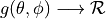
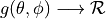

Design documentation¶
Overview¶
The Antenna module provides:
a new base class (AntennaModel) that provides an interface for the modeling of the radiation pattern of an antenna;
a set of classes derived from this base class that each models the radiation pattern of different types of antennas;
the class ThreeGppAntennaArrayModel, which implements the antenna model described in 3GPP TR 38.901
AntennaModel¶
The AntennaModel uses the coordinate system adopted in [Balanis] and
depicted in Figure Coordinate system of the AntennaModel. This system
is obtained by translating the Cartesian coordinate system used by the
ns-3 MobilityModel into the new origin  which is the location
of the antenna, and then transforming the coordinates of every generic
point
which is the location
of the antenna, and then transforming the coordinates of every generic
point  of the space from Cartesian coordinates
of the space from Cartesian coordinates
 into spherical coordinates
.
The antenna model neglects the radial component
into spherical coordinates
.
The antenna model neglects the radial component  , and
only considers the angle components . An antenna
radiation pattern is then expressed as a mathematical function
 that returns the
gain (in dB) for each possible direction of
transmission/reception. All angles are expressed in radians.
, and
only considers the angle components . An antenna
radiation pattern is then expressed as a mathematical function
 that returns the
gain (in dB) for each possible direction of
transmission/reception. All angles are expressed in radians.

Coordinate system of the AntennaModel¶
Single antenna models¶
In this section we describe the antenna radiation pattern models that are included within the antenna module.
IsotropicAntennaModel¶
This antenna radiation pattern model provides a unitary gain (0 dB) for all direction.
CosineAntennaModel¶
This is the cosine model described in [Chunjian]: the antenna gain is determined as:

where  is the azimuthal orientation of the antenna
(i.e., its direction of maximum gain) and the exponential
is the azimuthal orientation of the antenna
(i.e., its direction of maximum gain) and the exponential

determines the desired 3dB beamwidth  . Note that
this radiation pattern is independent of the inclination angle
.
. Note that
this radiation pattern is independent of the inclination angle
.
A major difference between the model of [Chunjian] and the one implemented in the class CosineAntennaModel is that only the element factor (i.e., what described by the above formulas) is considered. In fact, [Chunjian] also considered an additional antenna array factor. The reason why the latter is excluded is that we expect that the average user would desire to specify a given beamwidth exactly, without adding an array factor at a latter stage which would in practice alter the effective beamwidth of the resulting radiation pattern.
ParabolicAntennaModel¶
This model is based on the parabolic approximation of the main lobe radiation pattern. It is often used in the context of cellular system to model the radiation pattern of a cell sector, see for instance [R4-092042a] and [Calcev]. The antenna gain in dB is determined as:

where is the azimuthal orientation of the antenna
(i.e., its direction of maximum gain), is its 3 dB
beamwidth, and  is the maximum attenuation in dB of the
antenna. Note that this radiation pattern is independent of the inclination angle
.
is the maximum attenuation in dB of the
antenna. Note that this radiation pattern is independent of the inclination angle
.
ThreeGppAntennaArrayModel¶
The class ThreeGppAntennaArrayModel implements the antenna model described in
3GPP TR 38.901 38901, which is used by the classes ThreeGppSpectrumPropagationLossModel
and ThreeGppChannelModel.
Each instance of this class models an isotropic rectangular antenna array composed
of a single panel with NxM elements, where N is the number of rows and M is the
number of columns, configurable through the attributes “NumRows” and “NumColumns”.
The radiation pattern of the antenna elements follows the model specified in
Sec. 7.3 of 3GPP TR 38.901; only vertical polarization is considered (i.e.,
 ).
The directional gain of the antenna elements can be configured through the
attribute “ElementGain” (see formula 2.34 in [Mailloux] to choose a proper value).
By default, the array is orthogonal to the x-axis, pointing towards the positive
direction, but the orientation can be changed through the attributes “BearingAngle”,
which adjusts the azimuth angle, and “DowntiltAngle”, which adjusts the elevation angle.
The spacing between the horizontal and vertical elements can be configured through
the attributes “AntennaHorizontalSpacing” and “AntennaVerticalSpacing”.
).
The directional gain of the antenna elements can be configured through the
attribute “ElementGain” (see formula 2.34 in [Mailloux] to choose a proper value).
By default, the array is orthogonal to the x-axis, pointing towards the positive
direction, but the orientation can be changed through the attributes “BearingAngle”,
which adjusts the azimuth angle, and “DowntiltAngle”, which adjusts the elevation angle.
The spacing between the horizontal and vertical elements can be configured through
the attributes “AntennaHorizontalSpacing” and “AntennaVerticalSpacing”.
Note:
Currently, the model does not support multi-panel antennas, i.e.,
.
Currently, the model supports only single polarized (i.e., P = 1) antenna panels with vertical polarization (i.e.,
- Balanis
C.A. Balanis, “Antenna Theory - Analysis and Design”, Wiley, 2nd Ed.
- Chunjian(1,2,3)
Li Chunjian, “Efficient Antenna Patterns for Three-Sector WCDMA Systems”, Master of Science Thesis, Chalmers University of Technology, Göteborg, Sweden, 2003
- Calcev
George Calcev and Matt Dillon, “Antenna Tilt Control in CDMA Networks”, in Proc. of the 2nd Annual International Wireless Internet Conference (WICON), 2006
- R4-092042a
3GPP TSG RAN WG4 (Radio) Meeting #51, R4-092042, Simulation assumptions and parameters for FDD HeNB RF requirements.
- 38901
3GPP. 2018. TR 38.901, Study on channel model for frequencies from 0.5 to 100 GHz, V15.0.0. (2018-06).
- Mailloux
Robert J. Mailloux, “Phased Array Antenna Handbook”, Artech House, 2nd Ed.